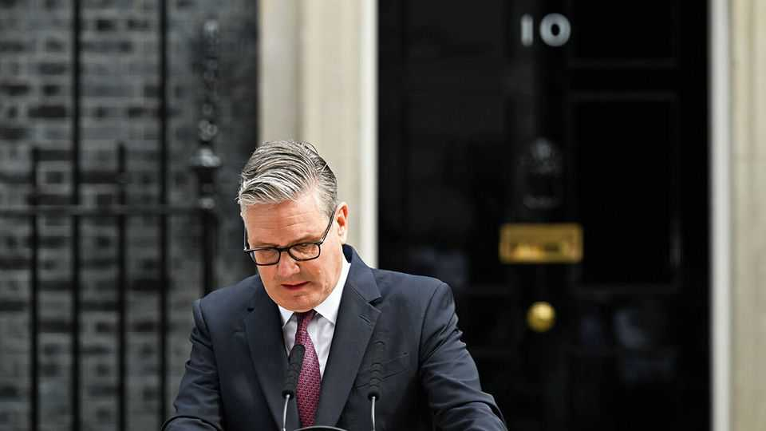

Politics
June 25th 2026

Sir Keir Starmer announced his resignation as Britain's prime minister, less than two years after winning a landslide majority at a general election. The trigger for Sir Keir’s decision to go was Andy Burnham’s victory in a by-election. The hitherto mayor of Greater Manchester is a Labour Party favourite who will stand for party leader in mid-July. Sir Keir’s time in office was plagued by broken promises and a series of U-turns, often forced by militant backbench MPs. His judgment was also questioned, as advisers and ministers, including his deputy, were forced to resign for inappropriate behaviour. Following disastrous local elections for Labour, seven ministers quit after falling out with Sir Keir.
After Sir Keir announced his departure the European Union postponed a summit with Britain that had only recently been set for July 22nd. Sir Keir had promoted the summit as a chance to reset Britain’s relations with the EU, but the EU wants to wait until a new prime minister is in place.
In some rare good news for Britain’s Conservatives, the party won its first by-election in 50 years in Scotland by booting out the Scottish Nationalists in south Aberdeen. The campaign centred on the nationalists’ lack of support for the oil and gas industry. Aberdeen is the hub of Britain’s North Sea energy business.
American and Iranian officials concluded a round of talks in Switzerland about the next stage of their peace deal. Qatari and Pakistani mediators reported “encouraging progress” towards a lasting agreement. But Donald Trump warned that “I can do whatever I want” after a 60-day pause in fighting. The president threatened to seize control of the Strait of Hormuz and resume attacks on Iran if it does not curtail Hizbullah, Iran’s proxy in Lebanon. At Iran’s urging, America imposed another ceasefire on Israel and Hizbullah in Lebanon. Lebanese and Israeli officials resumed talks in Washington.
Iran’s chief negotiator said Iran would “administer” the Strait of Hormuz after agreeing to set up a “telephone hotline” for ships passing through the waterway. Marco Rubio, the American secretary of state, said no country would be allowed to charge fees for vessels traversing the strait. An increasing number of ships have been passing through it. Oil prices have fallen back to pre-war levels. Brent crude traded below $73 a barrel.
The head of the IAEA, the UN’s nuclear watchdog, stated that the agency would carry out inspections of Iran’s nuclear facilities under the initial peace deal with America. Iranian officials said access would only be discussed under a final agreement.
The UN Security Council warned of more atrocities in Sudan, as the rebel Rapid Support Forces encircled El Obeid, the capital of the North Kordofan region. There are fears that the city’s 500,000 residents could suffer a similar fate to those in El Fasher, the capital of North Darfur, where the RSF massacred civilians last year.
Ethiopia’s election body confirmed that the Prosperity Party, led by Abiy Ahmed, the prime minister, won around 90% of the parliamentary seats in a vote on June 1st that opposition groups said was rigged. Voters found it hard, if not impossible, to cast their ballots in several conflict-ridden parts of the country.
The American Congress passed a housing bill with broad bipartisan support. The legislation aims to expand the supply of housing by relaxing federal regulations in the hope that this will spur construction and lower costs, among other things. It does not tackle local restrictions on building. But a tetchy Mr Trump said he won’t sign the act until Congress passes his election-reform bill.
Democratic socialists won three congressional primaries in New York city, and in two of the races booted out incumbents who were backed by the Democratic establishment and unions. Zohran Mamdani, the left-wing mayor, endorsed all three candidates, suggesting his popularity with voters has not waned since taking office in January.
General Chris Donahue submitted his resignation as America’s top commander in Europe. Pete Hegseth, America’s secretary of war, has led a purge of the senior ranks in the military’s top brass and is reviewing America’s troop commitments to Europe.
In India protesters demanded the resignation of the education minister over a decision to make 2.2m medical students resit their exams. The results of the previous exams were annulled after it was discovered that test papers had been leaked on messaging apps. The protests were led by the Cockroach Janta Party, a growing political movement for India’s discontented young voters.

Colombia’s presidential election was won by Abelardo de la Espriella, a conservative who was endorsed by Donald Trump. His margin of victory over Iván Cepeda, a leftist senator, was less than 1%. The election marks a rightward shift in Colombia following Gustavo Petro’s term in office. Relations with America fell to a new low under Mr Petro; Mr Trump once described him as a “sick man”. Mr de la Espriella rode the right-wing wave that has brought other governments to power in South America, as voters vent their anger about rampant crime and the high cost of living.
Underlining the tilt towards the right in South America, Keiko Fujimori seemed to have secured victory in Peru’s presidential election, which was held on June 7th. The latest tally of votes suggested that Ms Fujimori had taken an insurmountable lead over Roberto Sánchez, her left-wing rival. An official result is due in mid-July.
Two powerful earthquakes hit Venezuela causing multiple casualties. The epicentre was San Felipe, 200km (125 miles) west of Caracas, but buildings collapsed in the capital too and transport systems were closed. America said it would send search-and-rescue teams and medical and humanitarian supplies to the country. The earthquakes struck during a national holiday, so many residents were at home and not at work. The casualties are expected to rise.
Rodrigo Paz, Bolivia’s centrist president, declared a state of emergency that gives him broad authority to clear the roadblocks that protesters have being manning for weeks. The protesters want the government to curb its austerity programme and reinstate fuel subsidies, but the barricades they have erected on roads have impeded the transport of basic goods. The government in part blames Evo Morales, a former leftist president, for stirring up the trouble.
Bolivia, meanwhile, signed a new co-operation agreement with the United States to fight drug-trafficking. The deal was backed by Mr Paz. Mr Morales kicked agents from America’s Drug Enforcement Administration out of Bolivia when he was in power.
Peter Magyar, Hungary’s new centrist prime minister, presented sweeping reforms to curb corruption. Nicknamed “Operation Cleansing Fire”, the measures include the creation of a powerful anti-corruption body and a review of the constitution. Mr Magyar also proposed a constitutional amendment to remove Tamas Sulyok as president. Mr Sulyok is an ally of Viktor Orban, the former prime minister.
Much of western Europe boiled under a heatwave that smashed many temperature records. France recorded its hottest day since records began in 1947 when the thermometer hit 44.30C (111.70F) in Pissos, south of Bordeaux. At least 48 people died across France in drowning incidents as people plunged into rivers and lakes. The hot weather sparked Europe’s perennial debate about whether to install more air-conditioning.